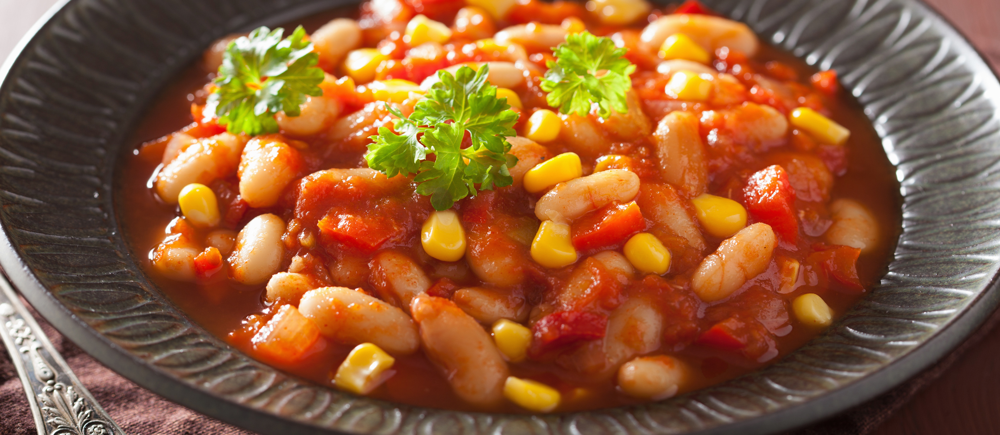

Githeri, a recipe

Githeri is one of the most common Kenyan dishes, consisting of maize and beans.
It's pretty easy to cook, no expert knowledge required. Below is the
detailed ingredient list and step-by-step guide.
Ingredients
- 1⁄2 kg maize
- 1⁄2 kg yellow beans
Steps
- Mix the maize and beans and wash thoroughly
- Put in a cooking pot and add 2 litres of water
- Cook for around 1 hour 30 minutes in high heat
- Fry as desired